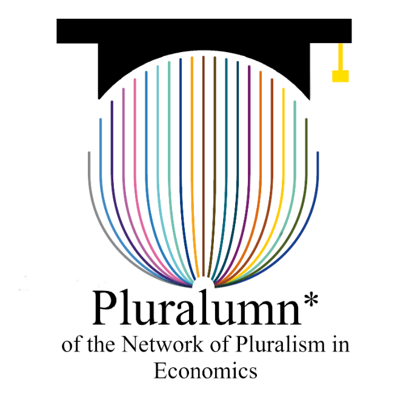

Pluralumn* Workshops
I have been part of the scientific and organising team of the Pluralumn* workshop series since 2022. The workshops bring together alumni of the German Network for Pluralism in Economics and early-career researchers for paper presentations, methodological exchange and discussion across different schools of economic thought.
The series has included the 3rd workshop in 2022, the 4th in Bamberg in 2023, the 5th in Duisburg-Essen in 2024, the 6th in Hamburg in 2025 and the 7th online workshop in 2026.
